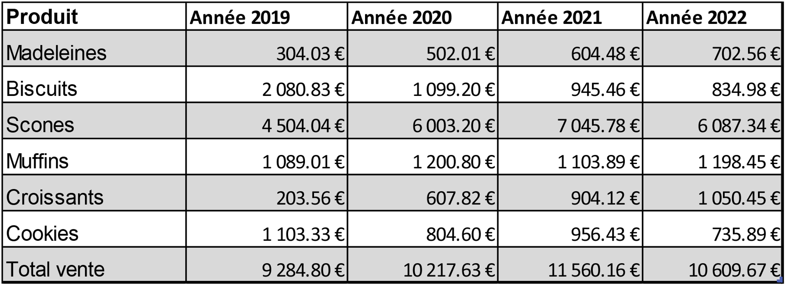

Historique
L'utilisation de tableaux de données pour organiser et stocker des informations remonte à des siècles. Cette histoire a commencé avec des tablettes d’argile (3000 av. J.-C) qui étaient utilisées pour enregistrer des transactions commerciales en Mésopotamie.
Avec l'avènement de l'informatique dans les années 1940, les premiers ordinateurs électronique ont été conçus pour effectuer des calculs complexes et manipuler des données stockées sous forme de tableaux.
Au milieu des années 1980, les feuilles de calcul deviennent populaires en permettant aux utilisateurs de créer des tableaux de données sur des ordinateurs personnels. C’est l’avènement des tableurs.
Aujourd'hui, les tableaux de données restent un élément essentiel de la gestion de l'information dans de nombreux domaines, de l'entreprise à la science des données en passant par la recherche et bien d'autres. Les méthodes de stockage et de gestion des données continuent d'évoluer pour faire face aux défis posés par la quantité croissante de données générées par les activités humaines et les dispositifs connectés.
Les outils de visualisation de données se basent sur des tableaux de données pour créer des graphiques.
- Chronologie de l’histoire de la dataviz
Pourquoi des tableaux de données ?
Le tableau de données est un élément de base de la construction de diagrammes, mais c’est aussi une manière de visualiser des données dans un but d’analyse ou de recherche d’information. C’est donc aussi une visualisation de données consistant à présenter les données sous forme d’un tableau de lignes et de colonnes.
Les principales raisons de les utiliser
- Il est très facile à construire et à utiliser
- Il permet de voir le format des données et la structure du jeu de données et de détecter des anomalies comme les données manquantes ou les points aberrants (exploration des données).
- Il permet de montrer une partie des données préalablement filtrées et triées (explication des données)
Les principales raisons de ne pas les utiliser
- Le tableau sollicite nos capacités de lecture (texte) plus que notre système visuel (image). Il est de ce fait moins efficace qu’un diagramme.
- Il devient vite illisible à mesure de l’augmentation du nombre de lignes et nombre de colonnes.
Le tableau et ses réglages
Pour faciliter la lecture d’un tableau de données, les règles de la dataviz s’appliquent aussi : notamment la règle du rapport données/encre introduite par Edward Tufte.
Ce concept; évalue l'efficacité d'une représentation graphique en terme de quantité d'encre utilisée pour afficher des données utiles par rapport à la quantité d'encre utilisée pour afficher des éléments non essentiels ou décoratifs. Un rapport encre/donnée ratio élevé est souhaitable, car il indique que la majorité de l'encre est consacrée à une communication des données pertinente, ce qui rend la représentation plus concise et plus efficace.
Appliquons les règles de la dataviz à cet exemple de tableau :

- Supprimez les informations redondantes (€ et année)
- Ajustez l’arrondi des chiffres,
- Supprimez l’alternance de couleur des lignes,
- Ajustez la largeur des colonnes et les hauteurs de lignes
- Utilisez le même type de police de caractère pour tout le tableau,
- Utilisez la couleur pour mettre en évidence les entêtes, le titre et les libellés de ligne,
- Alignez les chiffres à droite
- Classer les lignes (par ordre alphabétique pour cet exemple)
- Remplacez le quadrillage par une simple ligne horizontale
- Réduisez la taille des entêtes et des libellés de ligne au maximum en ajoutant un commentaire de cellule si besoin (triangle rouge en haut à droite de la cellule)

L’ajout de mini-graphiques ou sparklines (courbe / histogramme) rend encore plus visuelle la lecture des tableaux.